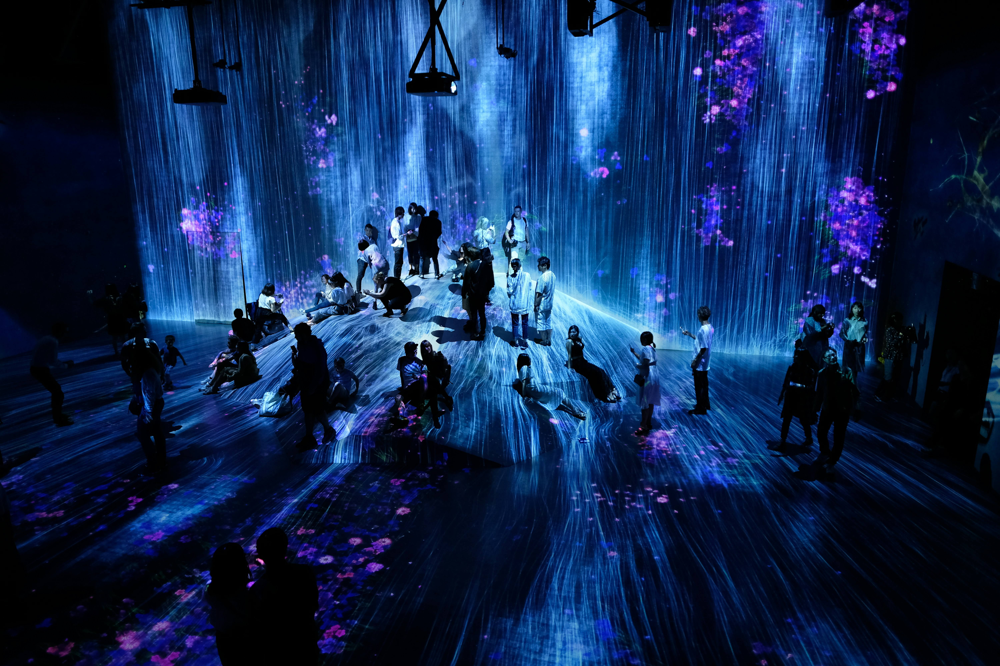

Top three activities to do at Japan

Explore Modern Wonders
Dive into Tokyo’s futuristic vibe with attractions like Shibuya Crossing, Akihabara, or Teamlab Borderless.

Savor Culinary Delights
Relish authentic sushi, ramen, and street foods like Takoyaki in Osaka or fresh seafood in Hokkaido.

Experience Traditional Culture
Participate in a tea ceremony, wear a kimono, or visit historic temples like Kinkaku-ji in Kyoto.